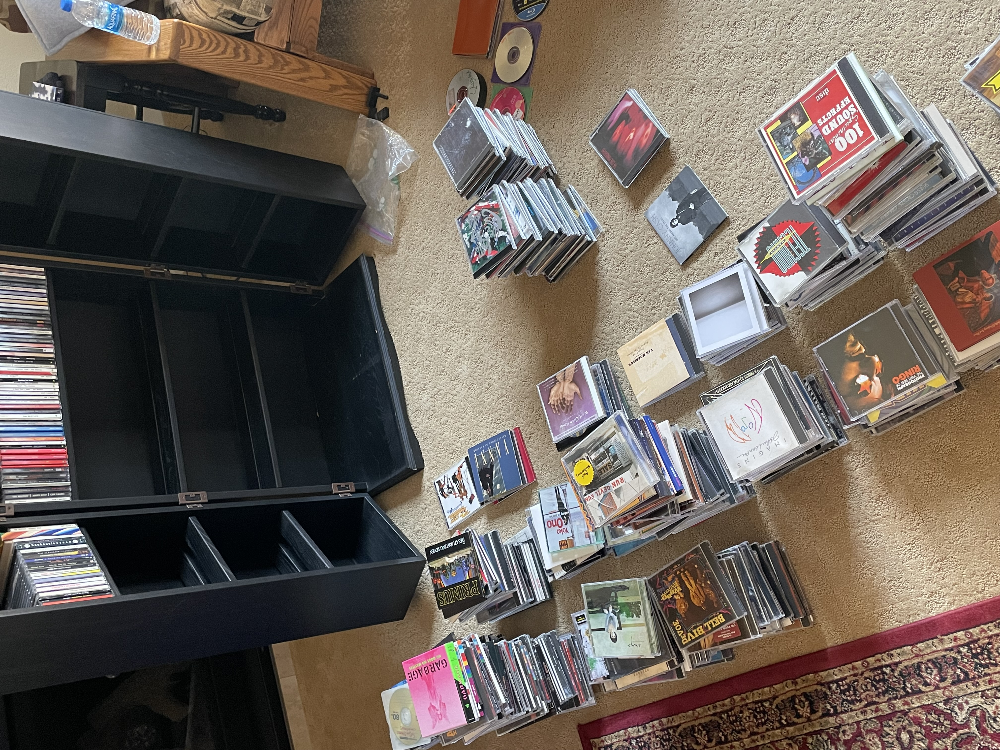
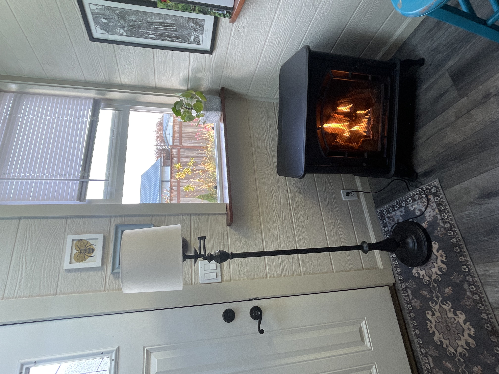
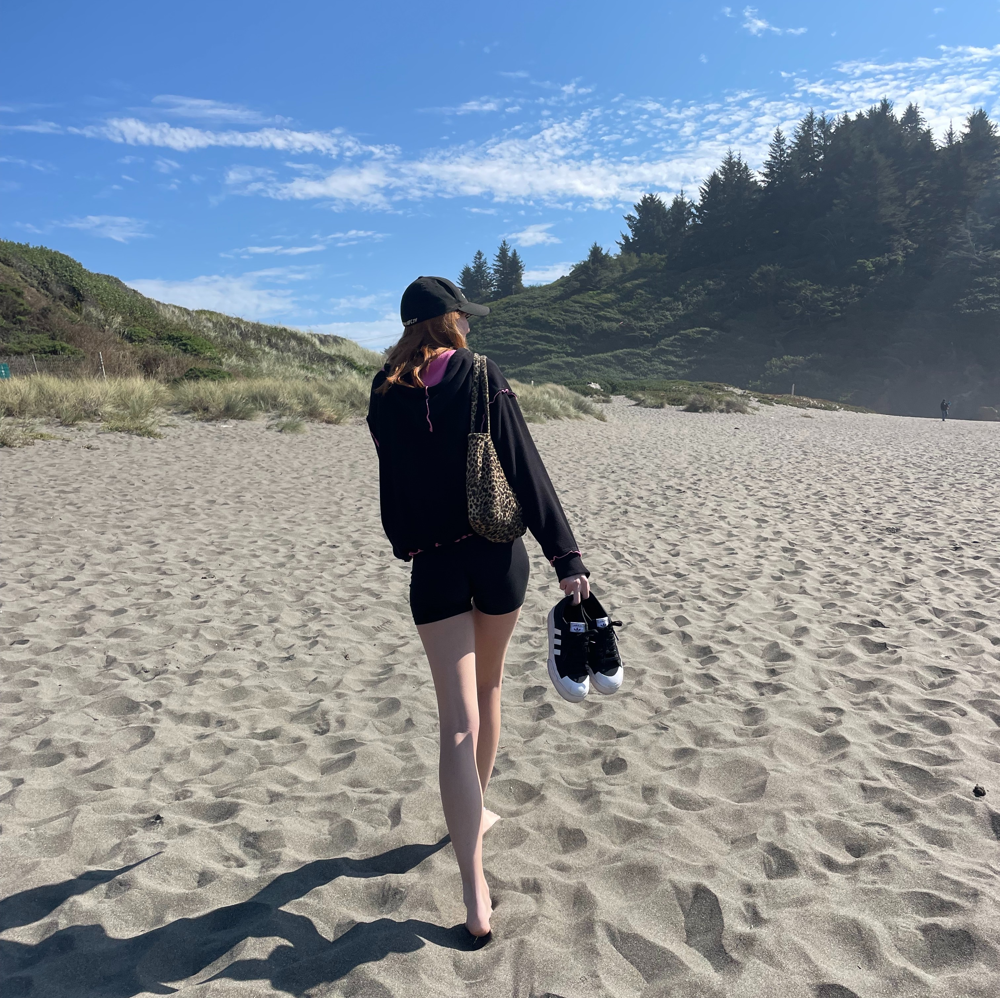
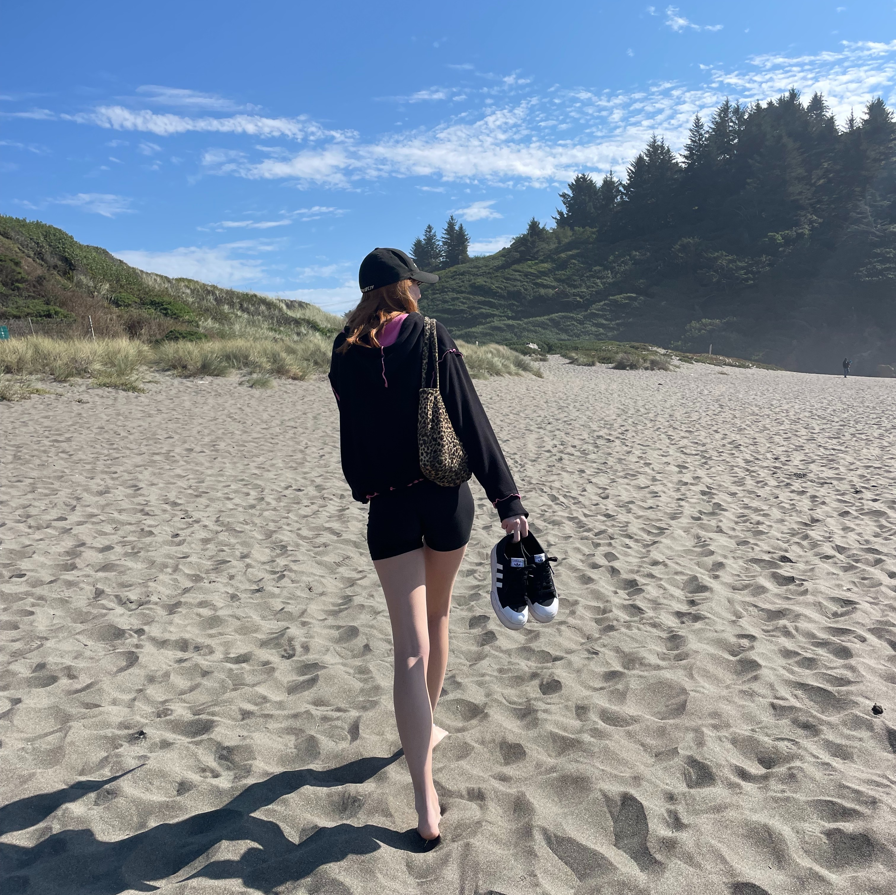

Taci Wiese
I am a second year studying business with a concentration on finance at the University of California, Riverside. Originally started as a computer science major, however switched to business to have an expanded variety of job options. I am from the Bay Area, California and grew up with a brother, cat, and dog. Growing up I was always fascinated with marketing and frequently would sell items I made to family and friends. This was a good experience even at such a young age. My brother attended the University of Oregon and double majored in Business and Economics. He now works as a financial advisor at Vanguard and has helped guide me through this process. My interests revolve around clothes and fashion as I hope to pursue a business career in the field. I hope to open my own clothing line and have decided to also concentrate on marketing to further help my goal.
Besides my business studies and career, I also play volleyball in college. I play for the University of California's club team and travel throughout socal from time to time. I have been playing volleyball for eight years and have traveled to the following places, Arizona, Colorado, Florida, Nevada, Utah, Texas, and Oregon. During these trips games would last around 5-6 hours a day, leaving me and the team to have a lot of freedom to explore. This experience helped my social skills and has enabled me to connect with people in depth and on the surface. I have created lasting friendships on these teams and have learned how to work with others to achieve a desired goal. In volleyball, each player must hold their weight or the whole team will fail and crumble. This pressure has taught me that despite your own mood and feelings you must persevere and complete your job to help the greater concept, the team.
Volleyball is not the only experience that has taught me valuable lessons but working small jobs has as well. My first job was as a nanny my junior year of high school. The young boy I nannied happened to be very spoiled and difficult to watch. This taught me a great amount of patience. Although it's frustrating trying to complete a job with obstacles in the way, the job does not complete itself. My second job was during the pandemic, I worked with food and made sandwiches as well as working as cashier. I worked five days a week closing and felt exhausted at the end of each shift. However I worked there for a year and felt rewarded after I had conquered each task given to me. I was a leading worker and helped train the new employees. My recent job was this summer. For weeks I would help families move into their new homes. I carried boxes in and out the house, I organized each room and heavily cleaned furniture, helped paint the house, and assisted with any other needed task. All of these tasks have helped prepare me for my future jobs by showing dedication and commitment.
Experience
Education
UC Riverside
Portfolio




